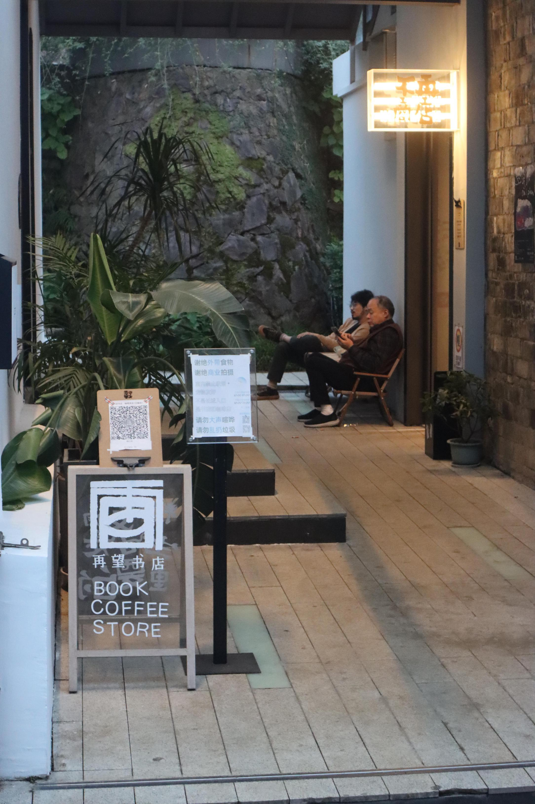
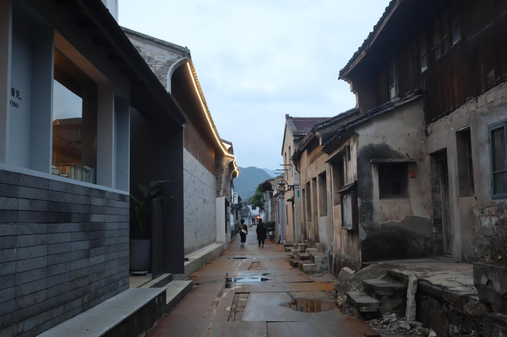
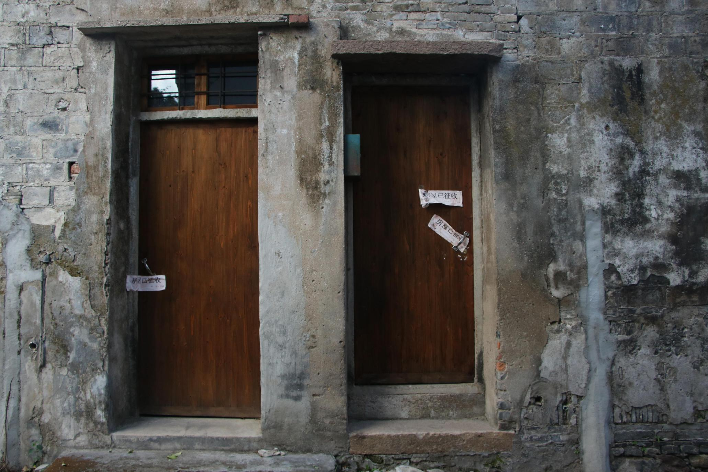
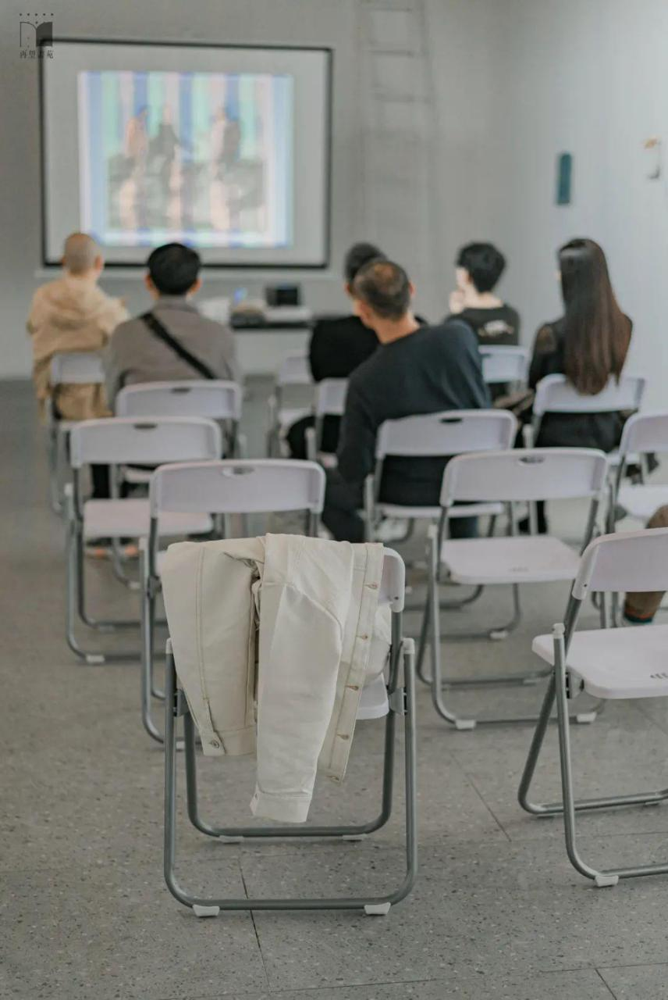
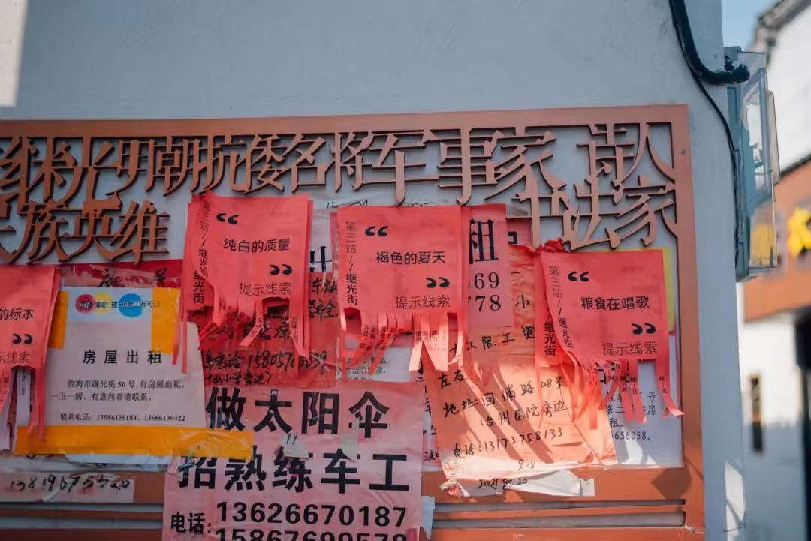
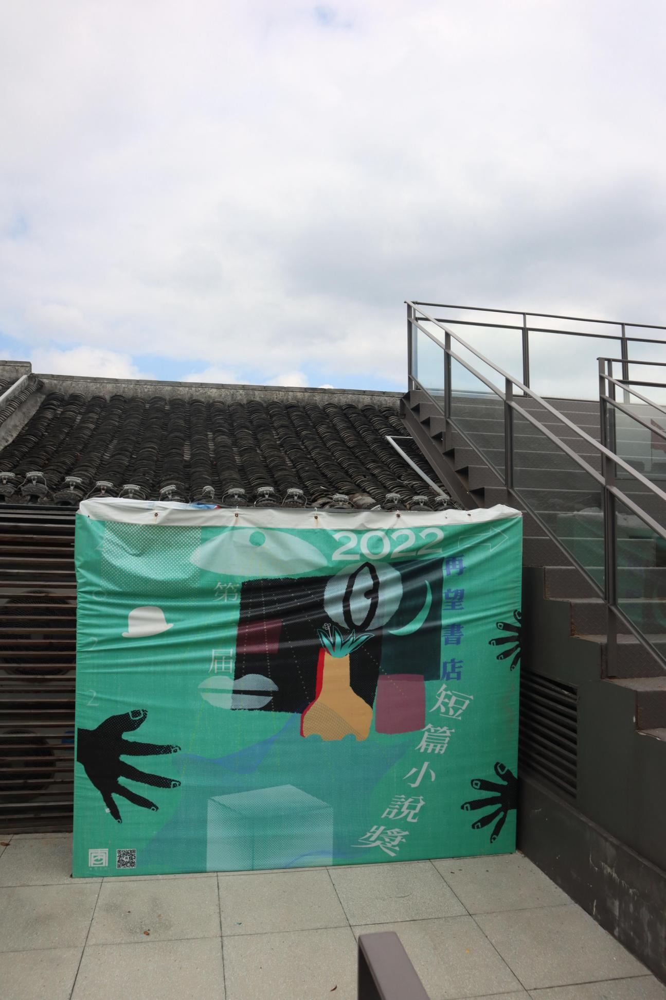
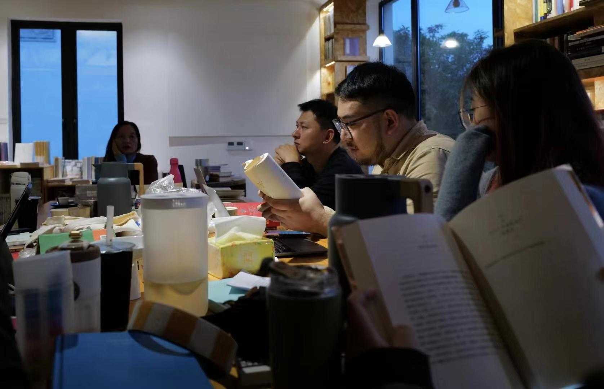
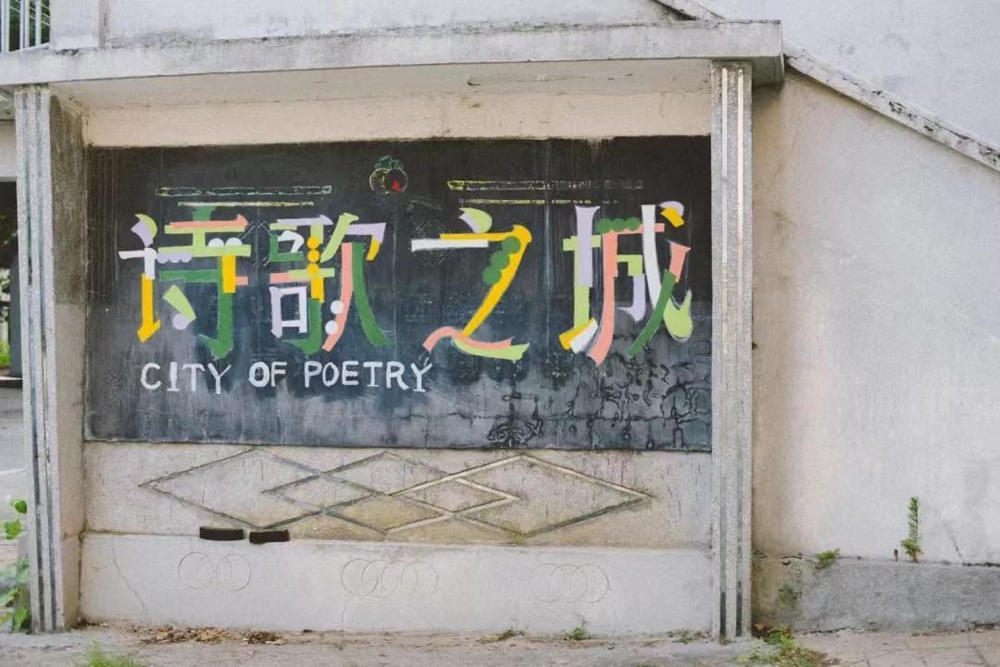
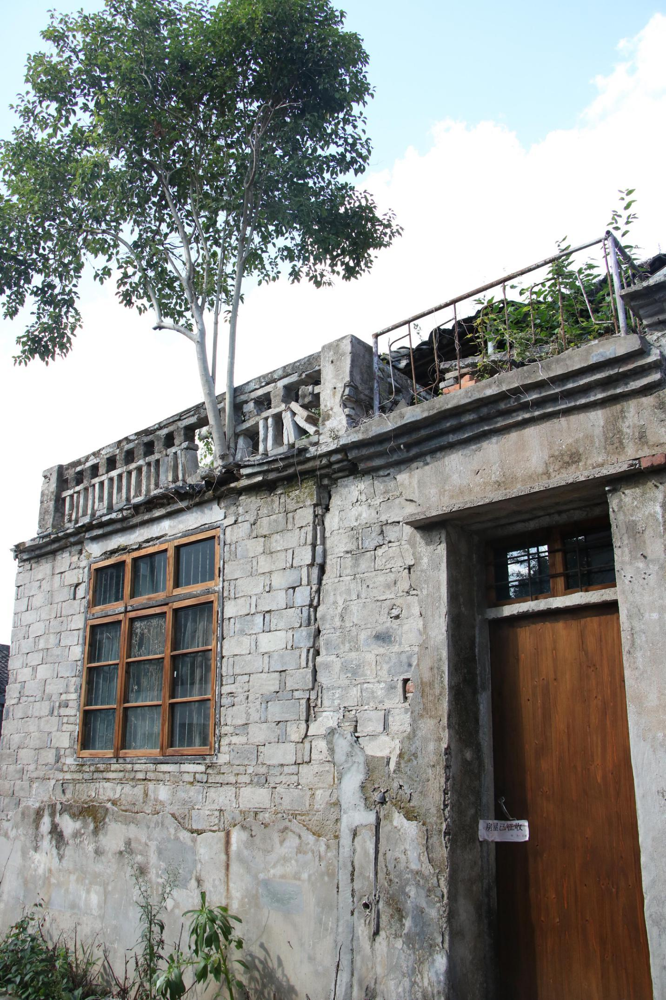

在小城，寻找公共生活的新入口
以临海再望书店为观察入口，记录独立书店如何连接文学、城市居民与公共生活。
全文阅读
2021年，在三联人文城市季的光谱论坛上，历史学家王笛曾指出，网络与虚拟空间的发展已经重塑了我们的日常生活方式：“一切都可以通过网上实现，实际上就缺少了面对面的交流、越来越少进入具体的公共空间。”同时他也向城市规划者、管理者、设计者抛出了一个问题：“怎样走出虚拟空间，进入公共空间，参与公共生活？ ”
坐落在临海古城区的再望书店，既不是城市的规划者，也不能被称为管理者和设计者，但它正尝试以自己的方式为这座小城市的公共生活带来新的可能。
再望书店的门开着。准确来说，这书店没有大门——入口是一处前后打通的连廊，连接着小巷与书店后城墙脚下的小庭院，也连接着书店东边的阅读空间与西边的咖啡屋与收银处。
入口的左侧，放着一块立牌，正面写着“再望书店”，背面写着“精神文明生活是重要的”。立牌上方放着一张半旧的场所码，尽管并没有人会走来要求你出示健康码。

小城书店
过了古城区天宁路上一个老牌坊，到了紫阳古街的一个入口，再拐两个弯，走将近四百米，便能看到再望书店。书店背靠古城墙，在十伞巷的新旧交接之处，几乎是巷子南侧最后一栋被修缮过的崭新房屋，而在书店的对面，巷子的北侧，则是一排老旧的民居。
书店靠路的一侧，做了一个延伸出来、高出人行道三四十厘米左右的台阶，书店主理人老五称之为“马路牙子一样的东西”。夏天傍晚，太阳下山的时候，总会有周围的街坊邻居们吃完晚饭后坐在台阶上乘凉，他们摇着扇子，择着菜，聊着家常里短、街坊八卦。

老五觉得“这就足够了”：“我的街坊邻里不爱来这个地方看书没关系，他们爱坐在我的马路（牙子）上聊聊家常就OK了。”他不想把书店打造成小城世俗生活中的“文艺殿堂”，反而希望书店逐渐被小城人们当成街坊邻居，大家可以把买书看成和买菜一样的平常事。
然而，出于城市发展文旅经济的需要，十伞巷文化展示区项目在今年7月启动，临海市将拆迁此区块的老房屋，将其作为集特色餐饮、文化展示、高端民宿于一体的核心文化地标进行全新的规划，以“赓续古城传承，焕发5A新彩”。6月份，除了挂牌的历史建筑外，书店对面的老房屋都被贴上了“房屋已征收”的红色封条，原先住着的街坊们也因此迁离，书店外的台阶也因此暂时被冷落。

书店仍旧是在这里。
有爱看书的阿公经常拎着保温杯走进书店，边逛边摇摇头说着“这书我不看”，但还是每天来看；寓言是书店的常客，他很少在书店买书，但每周都会来坐上半天，找个座位看看书或是看看视频学习；没有客人要咖啡或结账时，店员荔夏总是坐在吧台后或吧台边的一张小桌子上看书。
老李是临海人，他已经在上海住了二十多年。某次回临海，他走进再望书店，对着老五说：“我们来聊聊《红楼梦》吧。”老五如实告诉老李，自己是一个更受西方文学影响比较深的人，对传统文化并没有很深的了解：“那你有空就来店里给我讲讲《红楼梦》呗，我就当上课一样。”
由《红楼梦》开始，在书店里，相差三十多岁的老五和老李成为了忘年交。最近的一次见面，是在老李回上海之前。他们一起吃了饭，随后坐在书店连廊的两张低矮的小椅子上，聊了一下午的天。老李聊着“孙中山”“蒋介石”等过去的历史，老五向老李介绍“五条人”乐队，当然，他们之间的谈话的核心永远是“文学”。将近五点，暮色即将笼罩这座小城时，老李又一次离开了书店。
老五站起身，走到吧台后，给自己的1.5升运动水壶中重新冲满茶，等待着下一个能与他聊天的人。
对于可以进书店上架的书，老五只有一个标准，即“我自己认为值得一读”的书，于是书店里大多都是文学性书籍，小说为主，也有少量社科类的图书。然而，小城的人们并不会被选书的标准拒之门外。
有关历史和当代艺术的免费讲座不定期在书店举行，主讲人是老五的两位分别研究当代艺术和古城历史的朋友。通常，这样的讲座会有十几个听众，大多数都是本地人。当他们聊古城历史时，他们会走出书店，去看实体的老建筑、古井，也曾一起爬过巾山；当他们聊当代艺术时，他们直白地指出自己对艺术作品的第一感受，交换着自己的观点，不用怕因为自己的观点与“正确观点”相悖而受到攻击。
22年上半年，当代艺术讲座的主讲人徐薇因疫情被封控在上海，当代艺术的讲座搁置了很长时间。解封后，8月份她到访书店，老五对她说：“你一定要做一期当代艺术分享再走。”她连夜做了PPT，于是便有了8月5日的“分裂时刻：艺术与恶的距离”讲座。

在不办讲座的时候，书店咖啡厅边的这间并不算大的只刷了四面白墙的屋子便会被用来办书画、诗歌的展览，或用于小型的话剧演出场地，参与的大多都是一些话剧爱好者们。书店将这间多功能屋称为“白盒子”。
9月30日起，这里开始展出“沧桑：异物志水土临海”，展览由上海师范大学古籍研究所朱琺撰写异物志文本，并由书店里的画家苳宇锐创作的纸本水墨为其配画，画出了想象中临海还是一片汪洋时候的景象，每一个画中的景象都对应临海城市中的一个巷子。两位中年女性走进了书店，打量着参观一圈书店后走进了“白盒子”，饶有兴致地想要在现实中找出与画中相对应的地点，她们走过来问老五：“这两个巷子在哪里呀？我是临海人我也没听说过。”
更多时候，“白盒子”里的水墨画无人问津，老五并不会对这样的情况感到失望。对书店来说，办这样的公共文艺活动通常是“想办就办了”，如果办了几期没有人来，他们便会考虑取消这个活动。但他们从来没有想过停止办活动，“哪怕活动产生了一点点正面效果，影响了一部分人，对于我们都是意外之喜。”
2021年10月1日到3日，再望书店举办的“诗歌之路”活动在临海古城区展开。诗句被印在招租广告上，被挂在晾衣架上，被喷在墙上，被打印成小广告贴在街头巷尾的墙壁上。参与者需要沿着特定的路线，到相应的地点找到工作人员，完成一项与诗有关的任务，到达终点印刷厂旧址后，他们可以通过扭蛋获得小奖励。一位印刷厂下岗职工牵着女儿参加了活动，从崇和门出发，沿着东湖路到继光街，再到再望书店，最后经过府前街到了老印刷厂。1999年，老印刷厂完成了民营企业改制，她也随之下岗；18年，印刷厂搬迁。二十多年间，她再也没有来过老印刷厂，却借着诗歌，带着自己的小孩故地重游。
在老五眼中，这样的公共文化活动给大家提供了一个场域。尽管平时生活中大家不会去谈论诗歌，但“诗歌之路”给大家提供了一个场域，在这个场域里，所有人都可以短暂地脱离家长里短和鸡毛蒜皮，没有顾虑地抒发感性。

丰富即意义
再望书店初创于2016年，它萌芽于创始人然羽读书时代的一个想法。她是隔壁天台县人，高中来到了临海念书。刚来临海时，然羽觉得：“这座城市很小、很安逸……这样好是好，就是有些无聊，没处去”。
书店原先开在灵湖，只有咖啡和书，大概只有现在三分之一的面积大小，开张后不久就变成了一家远近闻名的“有书的咖啡馆”。然羽想，开书店不应该是开有书的店。它不仅是卖书、卖饮品或卖空间，书店得有一个灵魂，它得是一座城市“精神的所在”。
2018年，书店开始做“城市会客厅”，形式主要是邀请书店的朋友们来分享一些他们乐于分享的——艺术，职业，信仰，旅行，最近读的书等。2019年书店正式搬迁到紫阳街后，越来越多的合伙人加入了书店，其中就有老五。与此同时，活动的形式越来越多样，包括讲座、艺术展、小说奖、文学夜航船、脱口秀、话剧等。

2021年8月20日，再望书店发布了第一节再望书店青年诗歌奖征稿启事，面向全球1991年后出生的汉语新诗作者征稿，并将秉持公平公正公开的原则颁发奖项。
书店办诗歌奖，就是想要破除那些非平等的东西，去让更多的好的文本去呈现，无论这个文本是已经成为真正的作家，还是默默无闻的写作者，他呈现出来的，你都要给他提供机会去呈现。开始办这些活动时，老五能想到的最好的状态，就是在这之后，再望书店可以成为创作者呈现独立、原创、好的作品的平台，同时也是一个公共、公平的平台。
为了保证奖项的评审尽量客观、中立，让更多的无名青年诗人有凭借作品得到认可的机会，初评阶段，从来稿作品中选择10个作品入围的评审，都是青年诗人；后续的终审评委，书店在邀请诗歌创作者的同时，还邀请了诗歌评论者，在选择评审时，他们并不考虑被邀请人的文坛地位以及权威性，而是更考虑评委在有一定专业水准的同时，对诗歌不同的理念和视角，二者结合后，让评奖结果更加让人信服的同时，也让整体的视角变得更加全面。
在老印刷厂的小舞台上，几位评委在这里畅聊“诗歌与诗歌语境”，也在这里举行诗歌奖的最后颁奖仪式，常有因观点不同而展开唇枪舌战的场景，老五回想时，笑着说：“好像一群人聊着聊着，就聊生气了。 ”
巫昂就是当时的终审评委之一，因为青年诗歌奖，她认识了老五，知道了再望。
今年的10月份，巫昂把自己手上正在做的写作营活动，搬到了再望书店举行。巫昂和报名前来的学员们，共九人，围坐在书店二楼的一张木桌前，一坐便是半天。他们畅聊小说的音乐性，一起听贝多芬的《命运》；他们聊诗，聊文学，当谈起西蒙·范·布伊，便直接从书架上抽下《爱，始于冬季》翻阅。坐在这里的每个人都带着自己的作品前来，在这场延续16天的写作营中，他们将在再望书店这个空间里，坚持阅读、讨论、创作以及修改作品。
巫昂开始办宿写作中心，是2015年，起初她抱着“培养文学新人，做文学普及”的心态，在线上举办长期的写作培训活动。这不是一个类似“夏令营”式的写作中心，七年来，尽管有人不断地加入，也有人中途退出，但已经形成了一个相对固定的社群。参加此次线下写作营的人，大多也是之前的老学员，剩下的人至少也都在线下听过巫昂的课。

与书店的短片小说奖、诗歌奖相似，巫昂的写作中心也设立了宿文学奖。某种意义上，他们的理念是类似的——他们都认为，文学不应该只有诺贝尔奖、茅盾奖等“大奖”，也不应该只有作协、文联这样的权威。我们有自己去探索何为“好的文学作品”的权利，也应该让从未出版过作品的文学新人有打破圈层、获得认可的机会。“我觉得提供具有丰富性的平台才是（书店）的真正意义。”老五如是说。
巫昂后续还想联合宿文学奖和再望书店文学奖，做独立出版物。这些奖项在她看来，相对比较公平，而新人的成长需要这样良性、公平的土壤。在这里，有才能的人和作品被选出，不论出身和地位。
这一点，再望书店也在青年诗歌奖的回顾中提及：“我们试图通过这个奖项说明以下情况——才华是通行证。”
做青年诗歌奖的时，老五等人怕会被已经在主流文学圈成为权威的“老头子”们干预太多，所以不仅在评委的选择上倾向于年纪轻的，甚至在报名上也加以限制，将投稿者的年龄限制在30岁以下。除此之外，参赛的作品只凭才华取胜，而不考虑是否对人“看对眼”、出过书、或是被他人推荐，从而使其变成一个文学圈里的游戏。
再望书店也在努力争取获奖作品的正规出版。现阶段，老五和店里的人一起，将获奖文本收集起来，做一些少量印刷的小册子给朋友们看，名字就叫《年轻人上岗手册》，故名思议，便是希望给年轻写作者一个“上岗的机会”。
店里的员工陈十八，也在写诗。他曾说，再望书店是一家小城市的独立书店，但也想尽力完成一家书店的公共使命。对于读者来说，是提供舒适的阅读和选购环境，是提供代表再望审美趣味标准的书目；对作者来说，他们要尽最大能力扶持和帮助他们，因为他们是内容的来源，是意义的开始。
丢掉“拐杖”
伴随着2021年青年诗歌奖的入围奖的颁布开始的，还有主要在临海古城区的开展“诗歌之城”活动，活动由“诗歌之路”互动、“诗的形状”艺术展、“诗歌客厅”谈话以及“诗的见证”颁奖组成。由于活动从10月1日持续到30日，时间较长，且涉及在城市中的互动，规模较大，书店无法承担这样的开支，于是老五便写好了策划书，去政府相关部门请求资助。
对方同意了批款，但在筹备过程中，一些起初承诺的资金扶持突然取消，没有告知原因，而书店已经做了大量前期准备，老五也已经向嘉宾发出了邀请。
“诗歌之城”的活动还是要办下去，只是不能再考虑回本。老五想，最理想的情况是书店倒贴三万，把活动办好。否则既亏了钱，又没有任何实质性的输出。“我请人过来（参加活动），承诺给两千，现在不能又说我这边预算不够，你就不要来了，这是我的问题”，老五做好自己掏钱的准备。
当时老五最担心的还不是资金，而是政府以“疫情防控”或其他理由，彻底取消活动的举办。“每天都提心吊胆，怕一声令下，那时候就不是不给你钱的问题，是你想亏钱办都办不了。”老五说。对书店来说，重要的是办成这次的活动。

“诗歌之城”取得资助的条件是由临海文旅局作为主办方，再望书店作为承办方，项目本身归文旅局所有。“诗歌之城”中具体的活动交由书店策划开展，这是书店起初愿意和文旅局合办活动的重要原因。老五说：“如果手伸太长，要让我们加入意识形态的宣传，那我是做不了的。”
“诗歌之城”象征着再望书店一直追求的文学普及，引导居民在日常生活中寻找诗歌，在当地也具备一定的社会意义，客观上有助于临海作为一个城市的宣传。
在书店眼中，这次活动体现了一个较好的合作模式，即“把专业的事交给专业的人做”。尽管再望是一家“独立书店”，这种情况下，老五并不排斥政府的扶持和资助——前提是来自政府的干涉不多。
临海市人民政府官网显示：2016年，台州府城文化旅游区创建国家5A级旅游景区，古城开始进行开发，并推进巾山东南角区块、十伞巷区块、紫阳街历史文化展示区以及台州府城墙沿线景观改造。
这批文旅项目中，再望书店于2018年租下了古城墙脚的几幢老屋，政府为书店减免了前三年的租金。2018年的古城还是一片老旧居民区，还没有形成业态，“老屋”实际上只是几根腐朽的柱子、一片古城墙脚下百来平米的废墟。书店在这里光盖房子、做硬装，就用了一年多的年时间。

临海文旅局一直把再望书店和书店活动视作文旅开发大工程中的项目，以此为标准选择给予何种支持。作为交换，书店需要进行某些“配合”。临海市政府宣传部门需要用书店的场地拍摄宣传片，老五同意了，但要求拍摄在早上十点之前弄完，不能影响书店的正常营业。
在没有任何经营规划和财富积累的需求下，老五的愿望是：书店能早日实现持续健康的日常运转——正常营收能覆盖人员工资、合伙人分红以及运营开支。在政府提出的需求面前，一个能够“健康运转”的书店为老五保留了拒绝空间。
当了七八年的医疗销售，老五用医疗器械比喻书店和政府的关系：“一个人杵拐杖久了，没了拐杖就只能坐轮椅；后来坐轮椅坐惯了，没了轮椅只能躺着。我希望现在能不那么依赖那根‘拐杖’，能走就走，说不定有一天还能跑起来。”
（应受访者要求，文中人物均为化名）